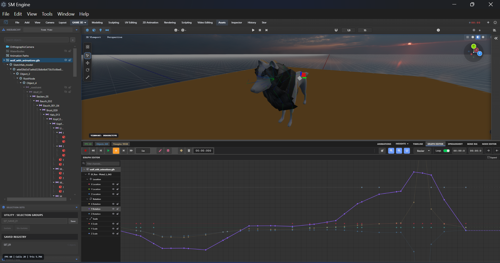

Graph Editor & Curve Animation
The Graph Editor is a powerful interface designed to manipulate keyframe interpolation via function curves (f-curves). Unlike the traditional Dopesheet or Timeline, which displays keyframes as discrete markers in time, the Graph Editor visualizes the raw values of animated properties plotted across the temporal axis.
Press Shift + Space then G in the viewport to rapidly swap to the Graph
Editor workspace. Double-click on any function curve to isolate its channel.
Timeline vs Graph Editor


The fundamental difference between the standard Timeline and the Graph Editor resides in their respective dimensionality:
- Timeline / Dopesheet: 1D representation showing when events (keyframes) occur. Excellent for retiming large blocks of animation across multiple objects.
- Graph Editor: 2D representation showing when events occur (X-axis) and what value the property holds (Y-axis). Vital for editing interpolation velocity, easing, overshoots, and procedural noise modifiers.
Curve Tangent Types
Every keyframe within an f-curve possesses interpolation characteristics determining how values transition between the current keyframe and adjacent ones. SM Engine supports several interpolation types:
| Tangent Type | Internal Enum | Description |
|---|---|---|
| Bezier | INTERP_BEZIER |
Smooth cubic spline curve utilizing editable left and right control handles for defining ease-in and ease-out velocities. |
| Linear | INTERP_LINEAR |
Constant velocity straight line drawn directly between two keyframes. Used for mechanical motion or constant rotation. |
| Constant (Hold) | INTERP_CONSTANT |
Stepped interpolation where the value is held constant until the precise moment of the next keyframe. Ideal for camera cuts, discrete boolean states, or blocking animation. |
Handle Controls
When operating in Bezier interpolation mode, keyframes expose control handles. The alignment of these handles drastically affects the resultant curve.
- Free: Left and right handles move completely independently of one another. Useful for sharp transitions or bounces.
- Aligned: Handles are locked in colinear alignment. Adjusting the angle of one handle identically affects the opposite handle, ensuring a perfectly smooth transition through the keyframe. Handle lengths can remain independent.
- Vector: Automatic linear interpolation between adjacent keyframes, but instantly converts to 'Free' if a handle is manually adjusted.
- Auto / Smooth: Automatically calculates optimal handle lengths and angles to produce a smooth, non-overshooting curve based on neighboring keyframes. Recommended default.
Use the View > Normalize curves option (Shortcut: N) when editing properties with
vastly different scales (e.g., Rotation in degrees vs Scale between 0-1) simultaneously.
Extrapolation Modes
Extrapolation dictates the behavior of the f-curve outside the boundaries of the first and last recorded keyframes.
| Mode | Effect | Common Use Case |
|---|---|---|
| Constant | Holds the final/initial value infinitely. | Standard behavior for objects coming to a complete rest. |
| Linear | Continues the trajectory based on the vector of the final keyframe tangent. | Objects moving at a constant speed out of frame. |
| Repeat (Cycle) | Loops the keyframe sequence infinitely. | Walk cycles, spinning gears, idle breathing animations. |
| Repeat with Offset | Loops the sequence but offsets the baseline by the delta of the loop. | A character walking forward continuously. |
Channels & Filtering
Complex scenes often feature hundreds of animated parameters. The Graph Editor left-hand panel provides robust filtering mechanisms to isolate relevant data.
By default, the Graph Editor displays curves for the currently selected object. The channel tree allows toggling visibility, locking editing capabilities, or muting execution for specific tracks.
// Example: Accessing F-Curve data programmatically
const animGraph = engine.animation.getGraphEditor();
const selectedObj = engine.selection.getActive();
// Retrieve rotation tracks
const rotX = animGraph.getTrack(selectedObj, 'transform.rotation.x');
// Modify extrapolation
rotX.setExtrapolation(SM_ENUMS.EXTRAPOLATION_CYCLE);
// Insert a linear keyframe
rotX.insertKeyframe({
time: 2.5, // seconds
value: 180.0,
interpolation: SM_ENUMS.INTERP_LINEAR
});
Supported Transform Channels
- Location: X, Y, Z axes
- Rotation: Euler X, Y, Z axes (or Quaternion W, X, Y, Z)
- Scale: X, Y, Z axes
- Custom Properties: Shader node parameters, light intensity, camera focal length, etc.